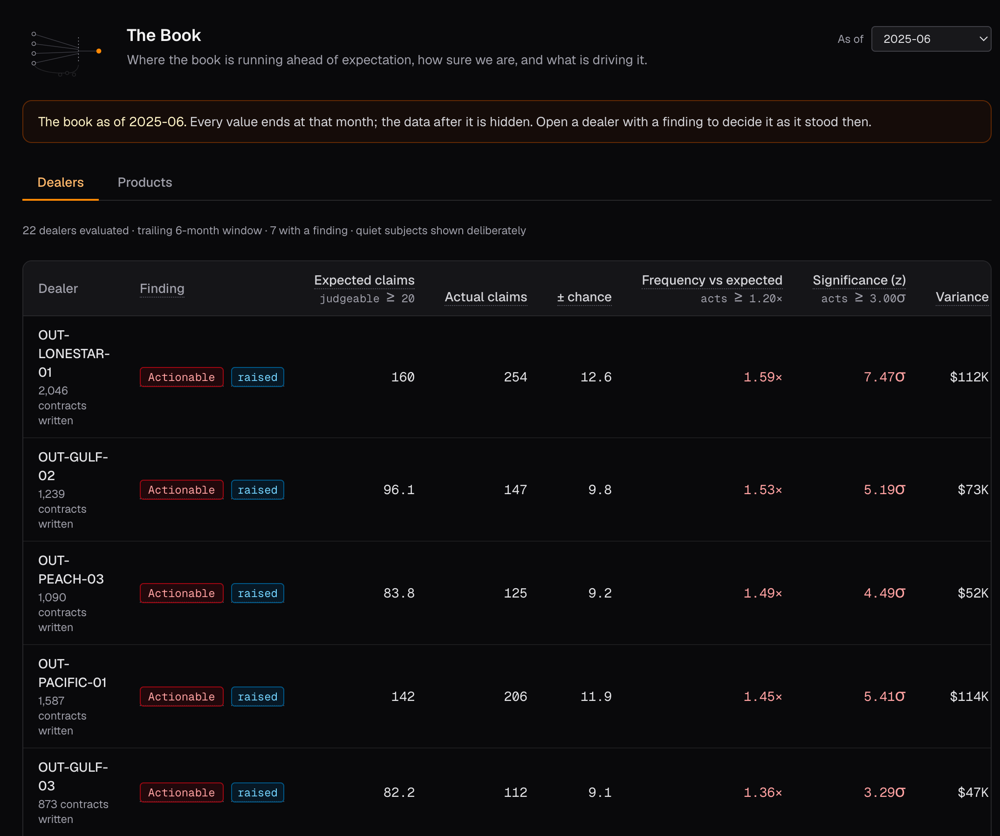
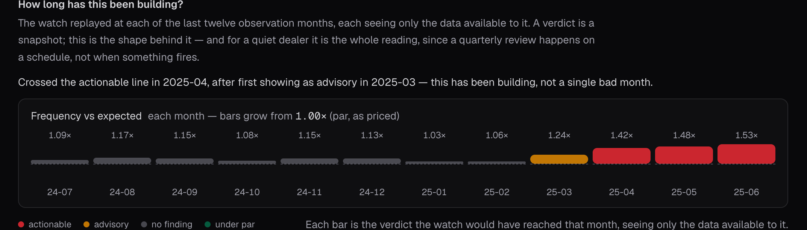
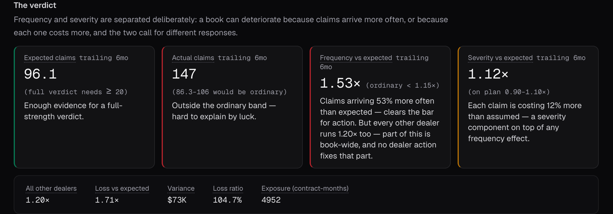
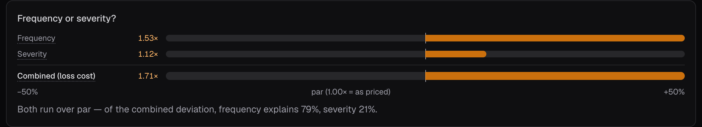
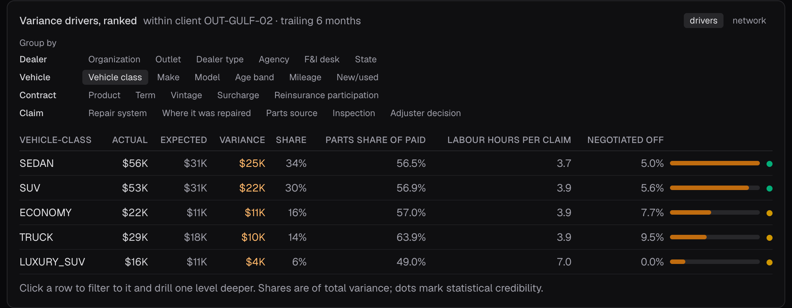
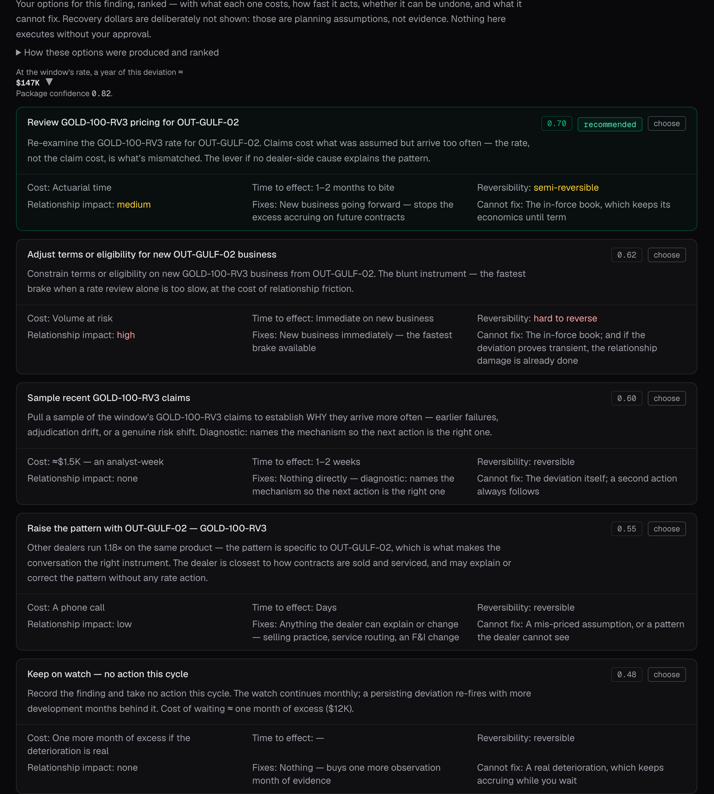
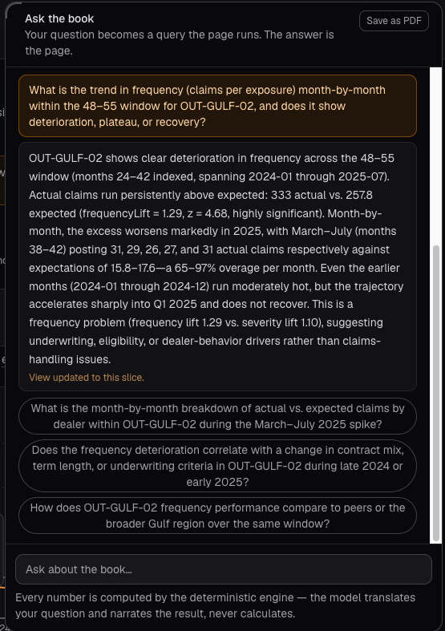

AI underwriting surveillance · for vehicle service contract administrators and agencies
Contracts are written every day. Claims develop every day. What your book is actually going to cost changes every day.
Whether it is performing the way it was priced to perform is usually answered on a cycle.
By the time the report says it, the business has already been living with it.
AgentForgeOS watches the book instead of reporting on it — AI reading every dealer and every product against what those contracts were priced to cost, and telling you the month something becomes worth acting on.
It watches, investigates and recommends. Your underwriters decide — and it remembers why.
A dealer starts writing business that looks ordinary. Several months later the claims on that book are arriving well above what those contracts were priced for.
Found as it forms, that is a phone call. Here is what we are seeing, here is what is driving it, here is what we would like to do about it. The dealer is a participant. Something can still change.
Found at reconciliation, it is a different call entirely. The exposure is written. The losses are developing. The conversation is about attribution rather than action, and everybody in it is reacting.
Same dealer. Same numbers. The only variable is when.
Periodic reporting answers what the book looked like when the cycle ran, and answers it well. It was never built to tell you the month a pattern stopped being noise. That is a different question, and it is the one this is built for.
Every dealer, every product, measured against what those specific contracts were priced to cost. Nothing is sampled, and nothing waits for somebody to run a report.

Not every deviation becomes a finding. Three things have to be true at once before anything reaches a person: enough claims to judge it, a gap beyond ordinary variation, and a gap large enough to matter. What clears all three is actionable; what clears a lower bar is advisory. A subject that is behaving is reported as behaving, not left out — silence you cannot audit is indistinguishable from a blind spot.
None of this needs a systems project. It runs on the contract, claim and cancellation records you already produce — which is also why you can see what it would have found on your own book before committing to anything.
Found as it happens
The same dealer, month by month, as it would have looked at the time. Each month's reading uses only the claims that had actually come in by then.
Nothing for eight months. A first warning in March. By April it was worth acting on.
That is the part a quarterly review cannot do. Not a better report at quarter end — a reading that changes as the claims arrive, and tells you the month it changes.
Drag it back. Everything after the month you land on disappears, because that is all anyone could have seen at the time.

The eight quiet months are the point. A dealer running a bit hot is ordinary, and being told so every month is worthless. This one was left alone until the pattern was real — and the first signal was a warning, not an alarm, which bought a month.
Every dealer is measured against what his own contracts were priced to cost — his vehicle mix, his products, his terms.
So "he just sells riskier cars" is already in the comparison, and stops being an answer.

Which matters, because the two have different answers. Claims arriving more often is a pricing and eligibility conversation. Claims costing more is a repair and adjudication one.

From there, cut it however you suspect — by product, vehicle class, mileage band, repair facility, agency, F&I desk, adjuster decision. Or ask in plain English and get an answer.

Most tools stop at the finding. This one lays out the options your business already uses, and what each one actually buys you.
For each: what it costs, how fast it bites, whether you can undo it, and what it will not fix. One is recommended, and you can see why.
You decide. Nothing happens in your systems.

Each option is honest about its limits. Re-pricing fixes what you write from here and cannot touch contracts already in force. Tightening terms works fastest and costs the most goodwill. A conversation with the dealer risks least and may fix nothing.
Every decision is kept with the reasoning behind it and what was known when it was made. Not a log — the case as it stood when somebody judged it.
Six months on, the same dealer comes up again. The person who handled it last time may have moved on. The record hasn't: what the numbers were, what was decided, what was rejected, and why.
And what came of it. The watch keeps running, so whether the deviation actually settled is recorded against the decision that was taken.
“Since this has happened before with this dealer about six months back, worth raising it.”
an underwriter's own words, kept with the evidence they were judged on
Everything else on this page describes what this does in a month. This is what it is worth in a year.
Why you can trust the numbers
AI is what reads the whole book every month, works out what is driving a finding, answers your questions and drafts the options.
The numbers themselves are calculated from your contracts and claims, not written by a model. Ask the same question twice and you get the same answer, and every figure can be traced back to the claims behind it.
That is the difference between a number you can act on and one you have to go and check. An underwriting position has to survive a carrier, a client and an auditor.
Ask the book a question in plain English.

And the reasoning is kept. What was known at the time, what was decided, what was rejected and why. When the same dealer comes up again next year, whoever is in the chair starts from the record rather than from somebody's memory.
It is also straight with you about what it cannot see. Every reading is over a set period, so something that went wrong earlier and has since settled will not show up. And your pricing assumptions are used exactly as you supply them — not adjusted, not second-guessed — and stored, so the question “what did we originally assume?” has an answer.
The evaluation
You don't have to take any of this on trust. Send us history, and we replay your book as it looked at each past month — using only what was known then.
What would it have found?
When would it have found it?
Why did it matter?
Then check it against what actually happened. It is your book — you already know which dealers went bad and when you caught them.
To evaluate: one file. Nothing connected, nothing installed, no access to your systems. De-identify it first — hash the dealer, contract and vehicle identifiers on your side and keep the key. This is a book of numbers and dates; it does not need to say who anyone is.
To run it for real, the book needs keeping current — a scheduled export of files you already produce. Not a systems project.
Underwriting surveillance is what runs today. Once your contracts, claims, dealers, products, vehicles and repair facilities are understood once, the same foundation answers other questions.
Weigh a claim against the vehicle, the contract, the component, the repair, and what comparable claims have cost before. The adjudicator still decides.
Surface patterns across dealers, repair facilities, vehicles and components that nobody would find one claim at a time.
Notice when what is being sold, and where, starts to drift from what the book was built on.
You hold the book. The questions are underwriting performance, claims cost, fraud and abuse, and how dealers and products are behaving.
A different set: sales, mix, how their dealers are performing, where the portfolio is heading. The data comes from the administrator; the questions are the agency's own.
Twenty minutes on our demonstration book, and a conversation about running the replay on yours.
or email nish@agentforgeos.ai
Underwriting Surveillance is built by AgentForgeOS. Nish Parikh co-founded Cognosos, a real-time visibility platform running in vehicle yards, distribution centres and hospitals, after nearly three decades building enterprise systems for operations that cannot afford to be wrong.
Every figure, dealer name and product code on this page is from our synthetic demonstration book, shown as one continuous investigation of a single dealer as of June 2025. No customer data appears anywhere, and no customer result is claimed.